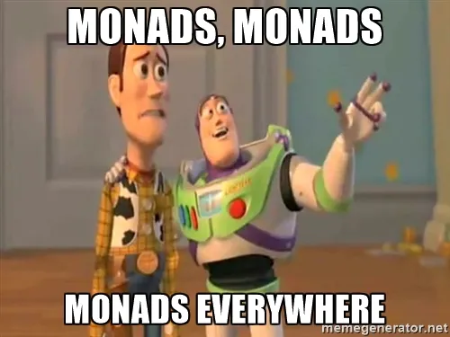

Supported Types
Find the type for the code you write today, and see which type classes each type supports.
Choosing a Type
Find the code you write today, or the Java type it already gives you, in the first column. Application code holds the type beside it through the Effect Path in the last column, where it has one.
| Your code today | Type | Effect Path |
|---|---|---|
| Failure | ||
| A method that throws a checked exception | Either | EitherPath |
Error messages collected in a List, or Bean Validation's Set<ConstraintViolation> | Validated | ValidationPath |
A try/catch block around a call that throws | Try | TryPath |
| A result record holding a value and a list of warnings | EitherOrBoth | EitherOrBothPath |
A List checked with isEmpty() before getFirst() | NonEmptyList | None: a Path holds it, as ValidationPath holds its errors |
| Absence | ||
A method that may return null | Maybe | MaybePath |
A method you call already returns an Optional | Optional | OptionalPath |
| Deferred | ||
| A method that performs its side effect as soon as it is called | IO | IOPath |
A field filled in on first use, behind a null check | Lazy | LazyPath, shown in On a LazyPath |
| An API gives you a future, or the work is already running on another thread | CompletableFuture | CompletableFuturePath, shown in On a CompletableFuturePath |
| Virtual threads | ||
A Callable submitted to an ExecutorService, and the Future you wait on | VTask | VTaskPath, and VResultPath for a typed error |
A loop over a paged or blocking source, or a Java Stream or Iterator built over one | VStream | VStreamPath |
| Environment and state | ||
| Settings injected into a service, or passed down through every method that needs them | Reader | ReaderPath |
A ThreadLocal, set at the start of a request and cleared at the end | Context | None: toVTask() gives a VTask, and Path.vtaskPath(task) a VTaskPath |
| A field that each method changes, or methods that take a value and return a pair of the result and the new value | State | WithStatePath |
| A list passed to every method that logs, or a logger whose output a test has to capture | Writer | WriterPath |
| Collections | ||
| Nested loops build every combination, and you keep them all in memory | List | NonDetPath for every combination, or ListPath, whose zipWith pairs by position |
A method you call already returns a Stream | Stream | StreamPath, which reads a finite stream into memory so it can run again, or takes a supplier for an endless one |
| Programs as data | ||
| A plain value, where code written for any monad needs one | Identity | IdPath, a step that cannot fail |
| A recursive method that overflows the stack, or a loop that keeps its own stack of work | Trampoline | TrampolinePath |
| Calls to an injected service, made directly from business code | Free | FreePath |
| Independent calls made one at a time, when you want to count, check or batch them first | Free Applicative | FreeApPath |
| One interface grown to hold every service's operations, or a dispatcher written by hand | EitherF | None: a program over the pair is a FreePath |
A Functor written by hand for an instruction set, or a chain of map calls that each walk the structure | Coyoneda | None |
| A second loop written beside a traversal, to sum, count or collect what it visits | Const | None |
Each type's page opens with a card that names a neighbouring type for when that type does not fit.
An Effect Path can hold two effects at once: VResultPath, for one, is a deferred task that fails with a typed error. Where no Path holds the pair you need, a monad transformer adds one effect to another, as Other types with instances shows.
What each type supports
| Type | Type classes |
|---|---|
Either<L, R> | Functor, Applicative, Selective, Monad, MonadError<L>, Foldable, Traverse, Bifunctor |
Validated<E, A> | Functor, Applicative, Selective, Monad, MonadError<E>, Foldable, Traverse, Bifunctor |
Try<T> | Functor, Applicative, Monad, MonadError<Throwable>, Foldable, Traverse |
EitherOrBoth<L, R> | Functor, Applicative, Monad, Foldable, Traverse, Bifunctor |
NonEmptyList<A> | Functor, Applicative, Monad, Foldable, Traverse |
Maybe<T> | Functor, Applicative, Selective, Monad, MonadError<Unit>, Alternative, MonadZero, Foldable, Traverse |
Optional<T> | Functor, Applicative, Selective, Monad, MonadError<Unit>, Alternative, MonadZero, Foldable, Traverse |
IO<A> | Functor, Applicative, Selective, Monad |
Lazy<A> | Functor, Applicative, Monad |
CompletableFuture<T> | Functor, Applicative, Monad, MonadError<Throwable> |
VTask<A> | Functor, Applicative, Monad, MonadError<Throwable> |
VStream<A> | Functor, Applicative, Monad, Alternative, Foldable, Traverse |
Reader<R, A> | Functor, Applicative, Selective, Monad |
Context<R, A> | Functor, Applicative, Monad |
State<S, A> | Functor, Applicative, Monad |
Writer<W, A> | Functor, Applicative, Monad, Bifunctor |
List<E> | Functor, Applicative, Selective, Monad, Alternative, MonadZero, Foldable, Traverse |
Stream<T> | Functor, Applicative, Monad, Alternative, MonadZero, Foldable, Traverse |
Id<A> | Functor, Applicative, Selective, Monad, Foldable, Traverse |
Trampoline<A> | Functor, Applicative, Monad |
Free<F, A> | Functor, Applicative, Monad |
FreeAp<F, A> | Functor, Applicative |
EitherF<F, G, A> | Functor |
Coyoneda<F, A> | Functor |
Const<C, A> | Functor, Applicative, Bifunctor |
A type class, such as Functor or Traverse, names operations that work on any type with an instance of it, so a row tells you which generic code accepts that type. Type Classes says what each one lets you call. Every row lists the classes in the same order, and includes each class a listed one extends, as the hierarchy shows. MonadError<…> names the error its instance raises and recovers from: the type's own L or E, a Throwable, or Unit, the bare absence of Maybe and Optional.
Two rows that match can still behave differently, because behaviour belongs to the instance: Either's ap stops at the first error, and Validated's keeps every one. A test reads the table from the library's classes, so it lists exactly the instances of these type classes the library has. Semigroup and Monoid, which take a plain type rather than a container, are left out. Some instances take arguments. Validated's and EitherOrBoth's take a Semigroup to join two errors, Writer's and Const's a Monoid to join two logs or two values, and EitherF's a Functor for each side.
Other types with instances
A monad transformer, such as EitherT, adds one effect to a monad you choose, so its instance takes that monad's own, and WriterT's a Monoid as well. ReaderT's MonadReader<…>, StateT's MonadState<…> and WriterT's MonadWriter<…> name the environment, state or output each gives access to, and MTL Capabilities shows code written against them. Tuple2 is a pair whose two sides Bifunctor maps, and Function a function whose input and output Profunctor adapts. None of them has a Core Types page, so each row links the page that shows it.
| Type | Type classes |
|---|---|
EitherT<F, L, R> | Functor, Applicative, Monad, MonadError<L> |
OptionalT<F, A> | Functor, Applicative, Monad, MonadError<Unit> |
MaybeT<F, A> | Functor, Applicative, Monad, MonadError<Unit> |
ReaderT<F, R_ENV, A> | Functor, Applicative, Monad, MonadReader<R_ENV> |
StateT<S, F, A> | Functor, Applicative, Monad, MonadState<S> |
WriterT<F, W, A> | Functor, Applicative, Monad, MonadWriter<W> |
Tuple2<A, B> | Bifunctor |
Function<T, R> | Profunctor |
Java has no higher-kinded types, so generic code reaches every type on this page through the same encoding, which How the Encoding Works shows.

Practise with concrete types in Tutorial 06: Concrete Types (7 exercises).
Previous: Const Next: Quick Reference